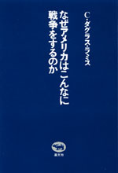
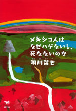
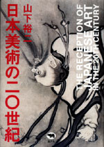
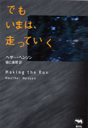
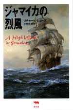
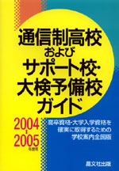
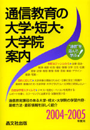

|

|
国際情勢・戦争 | |
| なぜアメリカはこんなに戦争をするのか | ||
| C・ダグラス・ラミス | ||
| 四六判 240頁 | ||
| 定価1470円（本体1400円） | ||
| ISBN4-7949- 6588-5 C0031 | ||
| 9・11のテロからアメリカが変わった。アフガン戦争からイラク戦争へと、次から次へと戦争をするアメリカ。そして、そのアメリカにどこまでもついていこうとしている日本。新しいアメリカの帝国主義とは？ 沖縄の米軍基地とは？ 日米新ガイドラインとは？ 有事法制とは？ 憲法第九条はどうなるのか？ さまざまの疑問にこたえる最新論集。 | ||
|
|
|
|
|

|
小説 | ||
| メキシコ人はなぜハゲないし、死なないのか | |||
| 明川哲也 | |||
| 四六判 664頁 | |||
| 定価3045円（本体2900円） | |||
| ISBN4-7949- 6584-2 C0093 | |||
| 朝日新聞ティーンズメールでおなじみTETSUYAの小説家デビュー作（筆名：明川哲也）。失意の末自殺を試みたタカハシは、人の言葉を話すネズミ達に救われる。彼らから、ネズミ界と人間界で自殺者が急増中と聞き、共に鬱を遠ざける宝を探すべく自殺率最低の国メキシコへ向うが…。自殺大国日本を救うべく贈る、希望と感動の冒険ファンタジー小説。 | |||
|
|
|
|
|
|
就職・デザイン | ||
| 自分の仕事をつくる | |||
| 西村佳哲 | |||
| 四六判 272頁 | |||
| 定価1995円（本体1900円） | |||
| ISBN4-7949- 6585-0 C0036 | |||
| 「働き方が変われば社会も変わる」という確信のもと、魅力的な働き方をしている人びとの現場から、その魅力の秘密を伝えるノンフィクション・エッセイ。他の誰にも肩代わりできない「自分の仕事」こそが、人を幸せにする仕事なのではないか。働き方研究家としてフィールドワークを続ける著者による、新しいライフスタイルとワークスタイルの提案。 | |||
|
|
|
|
|

|
美術・評論 |
||
| 日本美術の 二〇世紀 | |||
| 山下裕二 | |||
| A5 判 214頁 | |||
| 定価2730円 （本体2600円） | |||
| ISBN4-7949- 6583-4 C0070 | |||
| 「風濤図」はほんとうにヒットラーが絶賛したのか？ 源頼朝像は足利直義像？ 現在の若冲フィーバーはなぜ起きた？ 一見、価値がゆるぎなく見える日本美術の評価は、ほとんどが戦後につくられたものだ。美術をめぐる思いこみや因習を引き剥がし、日本美術の新しい面白さを伝える本。日本美術には新発見や新研究がまだまだある。研究者と読者をつなぐ橋渡しの本なのだ。 | |||
|
|
|
|
|

|
外国文学・ヤングアダルト | ||
| 必読系！ ヤングアダルト でもいまは、走っていく |
|||
| ヘザー・ヘンソン 樋口真理訳 | |||
| 四六 判 216頁 | |||
| 定価1680円 （本体1600円） | |||
| ISBN4-7949-2362-7 C0097 | |||
| 高校卒業を２か月後にひかえた１８歳のルーは、ケンタッキーの田舎町にも学校にも、ロックと馬鹿騒ぎとウエイトレスのアルバイトにもうんざり。ルーの唯一の〈本気〉は、写真だった――。やがてルーは恋におち、スピード狂の親友ジニーは〈死のカーブ〉で加速する。自由へのカウントダウンから未知へと疾走する瞬間を描き共感をよんだフィクション。 | |||
|
|
|

|
外国文学・ヤングアダルト | ||
| 必読系！ ヤングアダルト ジャマイカの烈風 |
|||
| リチャード・ヒューズ 小野寺健 訳 | |||
| 四六判 256頁 | |||
| 定価1995円（本体1900円） | |||
| ISBN4-7949-1834-8 C0397 | |||
| 美しい自然に囲まれたジャマイカの農園から故国イギリスへと船出した子供たちを待ち受けていたのは、海賊船の襲来だった。その日から海の男たちと子供たちの奇妙な集団生活が始まる。突発した殺人事件をめぐって、幼い心にひそむ純真さがもたらした恐るべき結末とは――。人間についての真実を天啓のように表出した、イギリス海洋小説の傑作。 | |||
|
|
|
晶文社出版の本 TEL.03-5688-6881
|
|

|
高校・学校案内 | ||
| 通信制高校およびサポート校・大検予備校ガイド 2004−2005年度用 | |||
| 晶文社出版編集部 編 | |||
| Ａ５判 232頁 | |||
| 定価1890円（本体1800円） | |||
| ISBN4-7949-9676-4 C7037 | |||
| 全国の公立・私立通信制高校133校、通信制高校サポート校148校、大検予備校85校を収録。うち約160校は各校１頁に詳しい概要と募集要項を、約210校は一覧で連絡先を掲載。通信制高校サポート校ジャンル別一覧があり、自分の興味や夢に添った学習内容の学校を検索できる。希望地域の学校を探しやすいように全国を４ブロックに分類。不登校・高校中退者などが高校卒業・大学入学資格を得る為の学校選びに最適な案内書。 |
|

|
学校案内 | ||
| 通信教育の大学・短大・大学院案内 ２００４−２００５年度用 | |||
| 晶文社出版編集部 編 | |||
| A5判 240頁 | |||
| 定価1680円（本体1600円） | |||
| ISBN4-7949-9344-7 C0037 | |||
| 大学・短大・大学院51校の通信教育課程を学習内容から履修方法まで詳細に紹介。 法律からデザインまで多彩なジャンルから、大学卒業・資格取得・生涯学習など目的に応じて、テキスト・スクーリングを利用した自由な学習スタイルで。社会福祉系学部の増加、インターネットの活用、注目の大学院など最新情報も。 |